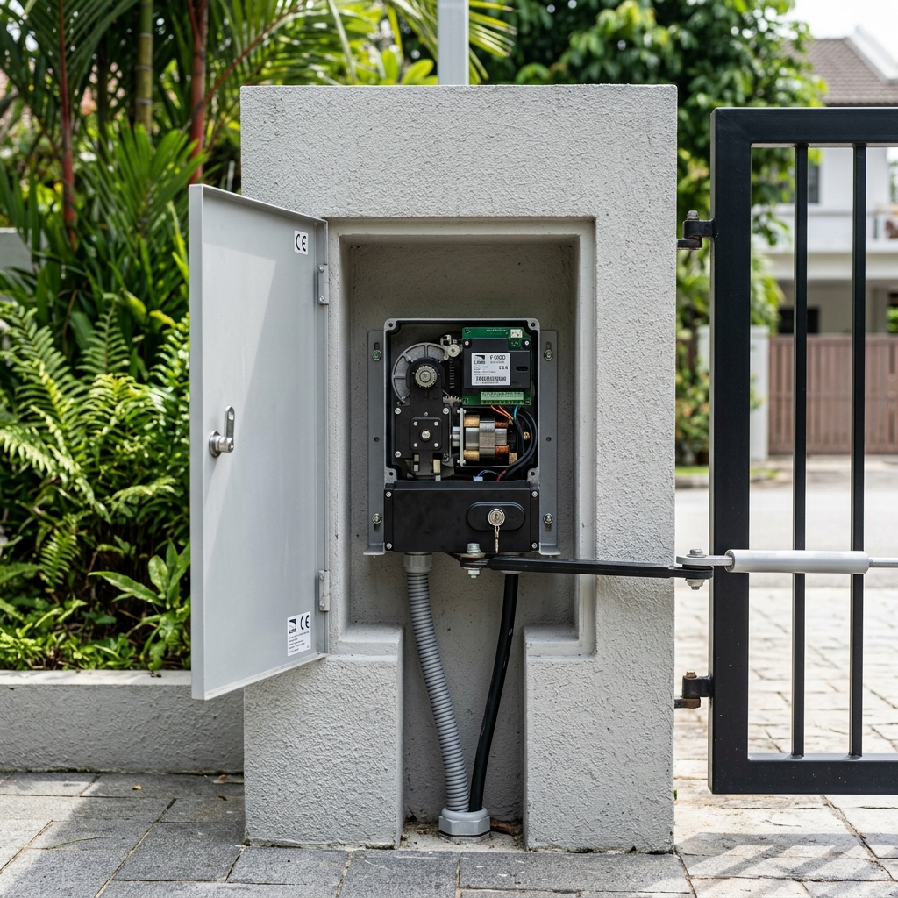

1. Why most people choose the wrong motor
The most common mistake when automating a gate is treating motor selection as a simple product purchase. You find a contractor, they quote you a motor, you say yes. The problem is that most quotations are driven by margin and stock availability, not by the specific characteristics of your gate.
The right motor depends on four things: whether your gate swings or slides, the width and weight of the gate leaf, the expected frequency of use, and the physical condition and alignment of the gate itself. Get any one of these wrong and you will be calling for a repair within three to five years.
This is worth getting right at the point of installation. A motor that is correctly matched to the gate will run reliably for a decade or more. One that is mismatched will degrade from day one.
2. First decision: swing or sliding
All residential and most commercial gates in Singapore operate on one of two mechanisms — swing or sliding. This is not a choice you make; it is determined by your existing gate and driveway layout.
Swing gates open inward or outward like a door. They require clear space in the direction they open — typically into the driveway. If your driveway is short or slopes toward the gate, an inward-opening swing gate may not be practical.
Sliding gates run along a track parallel to the boundary wall. They require clear wall space to one or both sides of the opening for the gate to slide into. They are common where driveway space is limited or where the approach is on a slope.
A foldable gate is a variant — the gate folds as it opens. The motor selection principle is the same as swing: it is still essentially a gate that pivots, just with an articulated leaf.
If you are unsure which motor suits your gate, take a photo showing the full gate, the hinge or track, and the driveway space on both sides. A competent contractor can advise from the photo before any site visit.
3. Swing gate motors: concealed vs swing arm
For swing gates, you have two motor types. The choice is determined primarily by the width of the gate leaf.
Concealed swing motor
The motor is buried in a housing below the gate hinge, invisible when the gate is closed. Clean appearance, no exposed mechanism. Suitable for gate leaves up to approximately 2 metres wide.
The limitation is longevity. A concealed motor is a sealed unit with internal gears that wear against the gate weight. Most concealed motors last five to seven years under normal residential use. Heavier gates or misaligned hinges accelerate that degradation.

Concealed recessed swing gate motor housing set into the ground. Singapore residential setting.
Swing arm motor
The motor is mounted above ground on the gate post or pillar, with an articulated arm that connects to the gate leaf. Visible, but significantly more capable than a concealed motor.
Swing arm motors handle heavier gate leaves and higher usage frequencies. A lifespan of ten or more years is common. They are the correct specification for gate leaves over 2 metres wide, for heavy timber or metal gates, and for any application with frequent daily use.

FAAC swing arm motor installed on a gate pillar. Clean, robust installation.
4. Sliding gate motors: weight rating is everything
Sliding gate motors are rated by the maximum weight of the gate they can drive. Getting this wrong is the most common mistake in sliding gate installations.
The ratings matter because a sliding gate motor works against both the weight of the gate and the friction of the track. An undersized motor will overheat and wear the drive gear prematurely.
As a general guide:
- Light residential: up to 300kg. Standard residential motor.
- Medium residential/light commercial: 300 to 600kg. Mid-range motor (e.g. FAAC 746).
- Heavy commercial/industrial: 600kg to 1800kg. Heavy-duty motor (e.g. FAAC 844).
Always verify the actual weight of the gate before specifying the motor. Estimated weights are often wrong — a gate that looks like lightweight steel may have solid infill panels that double its actual weight.
5. Safety photosensors — not optional for sliding gates
A sliding gate motor can generate enough force to cause serious injury if it closes on a person or pet. Photosensors detect obstructions and stop the motor before contact.
For sliding gates, photosensors are a safety requirement in Singapore. A heavy sliding gate without safety sensors is a liability. For swing gates, they are also highly recommended, especially if opening onto a public footpath.
6. Gate condition and alignment — the factor contractors skip
A motor is only as good as the gate it is driving. A gate that is misaligned or has worn hinges puts asymmetric load on the motor and degrades it faster. Before installation, check:
- Swing gates: Hinge condition and alignment. The gate should swing freely by hand.
- Sliding gates: Track condition, straightness, and cleanliness. Debris creates drag.
SECUREVISION VIEW: Under-sizing a motor to save cost leads to replacement in two years. Match the motor to the gate, check the condition first, and plan for annual maintenance. That combo lasts a decade.
7. What to confirm before the installer leaves
- Confirm the motor model installed matches the quote.
- Test the gate through five full cycles, including mid-travel stops.
- Verify the photosensors work by walking through the path during closing.
- Confirm the installer has shown you the manual release procedure.
- Verify the warranty period for both parts and labor.
BOTTOM LINE: An auto gate motor is a ten-year investment if specified correctly. Don't skip the professional assessment stage.

Ler Wee Meng
Securevision holds Police Licence No. L/PS/000267/2023P and is registered with the Building and Construction Authority of Singapore.